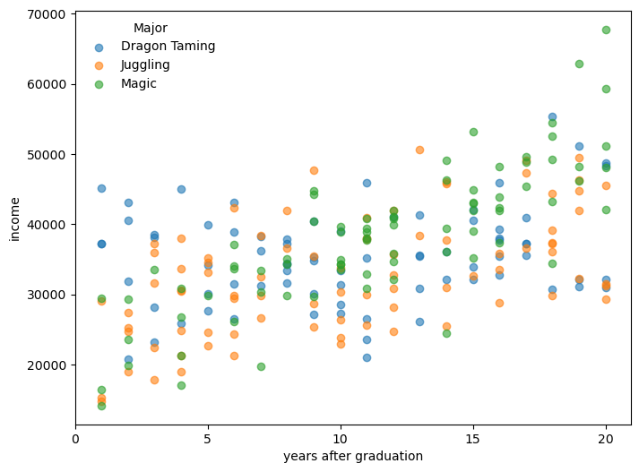

18 linear mixed effect model
A mixed effect model is an expansion of the ordinary linear regression model that includes both fixed effects and random effects. The fixed effects are the same as in a standard linear regression (could be with or without interactions), while the random effects account for variability across different groups or clusters in the data.
18.1 practical example
We are given a dataset of annual income (independent variable) and years of education (independent variable) for individuals that studied different majors in university (categorical variable). We want to predict the annual income based on years of education and the major studied, including an interaction term between years of education and major. One more thing: each individual appears more than once in the dataset, so we can assume that there is a random effect associated with each individual.
generate synthetic data
# set seed for reproducibility
np.random.seed(42)
# define parameters
majors = ['Juggling', 'Magic', 'Dragon Taming']
n_individuals = 90 # 30 per major
years_per_person = np.random.randint(1, 5, size=n_individuals) # 1 to 4 time points
# assign majors and person IDs
person_ids = [f'P{i+1:03d}' for i in range(n_individuals)]
major_assignment = np.repeat(majors, n_individuals // len(majors))
# simulate data
records = []
for i, pid in enumerate(person_ids):
major = major_assignment[i]
n_years = years_per_person[i]
years = np.sort(np.random.choice(np.arange(1, 21), size=n_years, replace=False))
# base intercept and slope by major
if major == 'Juggling':
base_income = 25_000
growth = 800
elif major == 'Magic':
base_income = 20_000
growth = 1500
elif major == 'Dragon Taming':
base_income = 30_000
growth = 400 # slower growth
# add person-specific deviation
personal_offset = np.random.normal(0, 5000)
slope_offset = np.random.normal(0, 200)
for y in years:
income = base_income + personal_offset + (growth + slope_offset) * y + np.random.normal(0, 3000)
records.append({
'person': pid,
'major': major,
'years_after_grad': y,
'income': income
})
df = pd.DataFrame(records)Let’s take a look at the dataset. There are many data points, so we will only see 15 points in three different places.
person major years_after_grad income
0 P001 Juggling 3 37183.719609
1 P001 Juggling 5 35238.112407
2 P001 Juggling 11 37905.435001
3 P002 Juggling 2 27432.186391
4 P002 Juggling 4 30617.926804
person major years_after_grad income
90 P034 Magic 1 14151.072305
91 P034 Magic 7 19716.656861
92 P035 Magic 12 41056.576643
93 P035 Magic 14 46339.987229
94 P036 Magic 16 41981.131518
person major years_after_grad income
190 P072 Dragon Taming 7 36173.437735
191 P073 Dragon Taming 8 33450.564557
192 P074 Dragon Taming 9 35276.927416
193 P074 Dragon Taming 17 37271.203018
194 P075 Dragon Taming 2 31819.051946Now let’s see the data in a plot.
plot income by major

The model we will use is
y = \underbrace{X \beta}_{\text{fixed effects}} + \underbrace{Z b}_{\text{random effects}} + \underbrace{\varepsilon}_{\text{residuals}}
The only new term here is Zb, the random effects, where Z is the design matrix for the random effects and b is the vector of random effects coefficients. We will discuss that a bit later. Let’s start with the fixed effects part:
X \beta = \beta_0 + \beta_1 \cdot \text{years} + \beta_2 \cdot \text{major} + \beta_3 \cdot (\text{years} \cdot \text{major})
The “years” variable is continuous, while the “major” variable is categorical. How to include categorical variables in a linear regression model? We can use dummy coding, where we create binary variables for each category of the categorical variable (except one category, which serves as the reference group). In our case, we have three majors: Juggling, Magic, and Dragon Taming. Let’s use “Juggling” as the reference group. We can create two dummy variables that function as toggles.
major_Magic: 1 if the major is Magic, 0 otherwisemajor_DragonTaming: 1 if the major is Dragon Taming, 0 otherwise
18.2 visualizing categories as toggles
In the equation above, we have only one parameter for “major” (\beta_2), and only one parameter for the interaction terms (\beta_3). In reality we have more, see:
\begin{align*} \text{income} &= \beta_0 + \beta_1 \cdot \text{years} \\ &+ \beta_2 \cdot \text{major\_Magic} + \beta_3 \cdot \text{major\_DragonTaming} \\ &+ \beta_4 \cdot (\text{years} \cdot \text{major\_Magic}) + \beta_5 \cdot (\text{years} \cdot \text{major\_DragonTaming}) \\ &+ \epsilon \end{align*}
The first line represents the linear relationship between income and education of the reference group (Juggling). The second line adds the effects on the intercept of having studied Magic or Dragon Taming instead, and the third line adds the the effects on the slope of these two majors.
Let’s see for a few data points how this works. Below, dummy variables represent the pair (major_Magic, major_DragonTaming).
| years_after_grad | major | Dummy variables | income |
|---|---|---|---|
| 3 | Juggling | (0, 0) | 37183.72 |
| 5 | Magic | (1, 0) | 35101.07 |
| 7 | Dragon Taming | (0, 1) | 27179.77 |
| 10 | Juggling | (0, 0) | 26366.80 |
| 12 | Magic | (1, 0) | 26101.53 |
| 16 | Dragon Taming | (0, 1) | 39252.76 |
The design matrix X would look like this:
X = \begin{array}{c} \begin{array}{cccccc} \beta_0 & \beta_1 & \beta_2 & \beta_3 & \beta_4 & \beta_5 \end{array} \\ \begin{pmatrix} 1 & 3 & 0 & 0 & 0 & 0 \\ 1 & 5 & 1 & 0 & 5 & 0 \\ 1 & 7 & 0 & 1 & 0 & 7 \\ 1 & 10 & 0 & 0 & 0 & 0 \\ 1 & 12 & 1 & 0 & 12 & 0 \\ 1 & 16 & 0 & 1 & 0 & 16 \end{pmatrix} \end{array}.
The betas above the matrix are there just to label the columns, they are not really part of the matrix. The 3rd and 4th columns are the dummy variables for the majors, and the 5th and 6th columns are the interaction terms between education and the majors.
If we were not interested in the random effects, we could stop here, and just use the ordinary least squares (OLS) method already discussed to estimate the coefficients \beta.
18.3 random effects
The name “mixed effects” comes from the fact that we have both fixed effects and random effects.
Conceptually, the random effects function in a very similar way to the fixed effects. Instead of a small number of categories, now each person in the dataset is a category. In our example we have 90 different people represented in the dataset, so the quantity Z in Zb is the design matrix for the random effects, which is a matrix with 90 columns, one for each person, and as many rows as there are data points in the dataset. Each row has a 1 in the column corresponding to the person, and 0s elsewhere. The vector b is a vector of random effects coefficients, one for each person.
18.4 implementation
We can use statsmodels function smf.mixedlm to do everything for us. We just need to specify the formula, which includes the interaction term, and the data.
If you don’t mind which category is the reference group, you can skip the cell below. If you want to make sure a give one is the reference group (Juggling in our case), then you should run it.
The syntax is fairly economic. The formula
income ~ years_after_grad * major
specifies a linear model where both the baseline income (intercept) and the effect of time since graduation (slope) can vary by major. The * operator includes both the main effects (years after graduation and major) and their interaction, allowing the model to fit a different intercept and slope for each major.
In the line
model = smf.mixedlm(formula, data=df, groups=df["person"])
the groups argument specifies that the random effects are associated with the “person” variable, meaning that each person can have their own random intercept.
Let’s see the results
Mixed Linear Model Regression Results
==============================================================================================
Model: MixedLM Dependent Variable: income
No. Observations: 239 Method: REML
No. Groups: 90 Scale: 10690821.7105
Min. group size: 1 Log-Likelihood: -2327.5068
Max. group size: 4 Converged: Yes
Mean group size: 2.7
----------------------------------------------------------------------------------------------
Coef. Std.Err. z P>|z| [0.025 0.975]
----------------------------------------------------------------------------------------------
Intercept 25206.095 1349.760 18.675 0.000 22560.615 27851.575
major[T.Magic] -2999.754 1995.748 -1.503 0.133 -6911.348 911.840
major[T.Dragon Taming] 5579.198 1954.661 2.854 0.004 1748.133 9410.263
years_after_grad 723.745 72.028 10.048 0.000 582.573 864.917
years_after_grad:major[T.Magic] 635.180 109.599 5.795 0.000 420.370 849.989
years_after_grad:major[T.Dragon Taming] -295.862 106.315 -2.783 0.005 -504.235 -87.488
Group Var 33814137.626 2268.953
==============================================================================================
18.5 interpreting the results
To interpret the coefficients, start with the reference group, which in this model is someone who studied Juggling. Their predicted income is:
\text{income} = 25206.10 + 723.75 \times \text{years}
Now, for a person who studied Magic, the model adjusts both the intercept and the slope:
Intercept shift: -2999.75 Slope shift: +635.18 So for Magic, the predicted income becomes:
\begin{align*} \text{income} &= (25206.10 - 2999.75) + (723.75 + 635.18) \times \text{years} \\ &= 22206.35 + 1358.93 \times \text{years} \end{align*}
This means that compared to Jugglers, Magicians start with a lower baseline salary, but their income grows much faster with each year after graduation.
The Coef. column shows the estimated value of each parameter (e.g., intercepts, slopes, interactions). The Std.Err. column reports the standard error of the estimate, reflecting its uncertainty. The z column is the test statistic (estimate divided by standard error), and P>|z| gives the p-value, which helps assess whether the effect is statistically significant. The final two columns, [0.025 and 0.975], show the 95% confidence interval for the coefficient — if this interval does not include zero, the effect is likely meaningful.
The line labeled Group Var shows the estimated variance of the random intercepts — in this case, variation in baseline income between individuals. The second number reported is the standard error associated with this estimate, which indicates how much uncertainty there is in the estimate of the variance.
If you like, you can print out all the variances for the random effects. They are not explicity shown in the summary, but you can access them through the model’s random_effects attribute:
result.random_effects
Finally, the model as is does not include random slopes, meaning that the effect of years after graduation is assumed to be the same for all individuals. If you want to allow for different slopes for each individual, you can modify the model to include random slopes as well. This would require changing the formula and the groups argument accordingly. Also, result.random_effects will then contain not only the random intercepts, but also the random slopes for each individual.
model = smf.mixedlm(
"income ~ years_after_grad * major",
data=df,
groups=df["person"],
re_formula="~years_after_grad"
)
result = model.fit()
print(result.summary())/Users/yairmau/miniforge3/envs/olympus/lib/python3.11/site-packages/statsmodels/base/model.py:607: ConvergenceWarning: Maximum Likelihood optimization failed to converge. Check mle_retvals
warnings.warn("Maximum Likelihood optimization failed to "
/Users/yairmau/miniforge3/envs/olympus/lib/python3.11/site-packages/statsmodels/regression/mixed_linear_model.py:2200: ConvergenceWarning: Retrying MixedLM optimization with lbfgs
warnings.warn( Mixed Linear Model Regression Results
==============================================================================================
Model: MixedLM Dependent Variable: income
No. Observations: 239 Method: REML
No. Groups: 90 Scale: 10125672.1682
Min. group size: 1 Log-Likelihood: -2323.7559
Max. group size: 4 Converged: Yes
Mean group size: 2.7
----------------------------------------------------------------------------------------------
Coef. Std.Err. z P>|z| [0.025 0.975]
----------------------------------------------------------------------------------------------
Intercept 25133.841 1208.050 20.805 0.000 22766.106 27501.576
major[T.Magic] -2805.540 1811.051 -1.549 0.121 -6355.135 744.055
major[T.Dragon Taming] 5980.367 1767.166 3.384 0.001 2516.786 9443.949
years_after_grad 731.399 84.211 8.685 0.000 566.349 896.450
years_after_grad:major[T.Magic] 611.065 126.072 4.847 0.000 363.969 858.161
years_after_grad:major[T.Dragon Taming] -329.530 122.977 -2.680 0.007 -570.561 -88.498
Group Var 22392488.656 1835.422
Group x years_after_grad Cov 90328.607 75.664
years_after_grad Var 39074.487 7.401
==============================================================================================
18.6 back to OLS
If you went this far, and now realized you don’t care about random effects, you can just use the statsmodels function smf.ols to fit an ordinary least squares regression model. The syntax is similar, but without the groups argument.
import statsmodels.formula.api as smf
# formula with main effects and interaction
formula = "income ~ years_after_grad * major"
# fit the model with OLS (no random effects)
ols_model = smf.ols(formula, data=df)
ols_result = ols_model.fit()
# print summary
print(ols_result.summary()) OLS Regression Results
==============================================================================
Dep. Variable: income R-squared: 0.455
Model: OLS Adj. R-squared: 0.443
Method: Least Squares F-statistic: 38.85
Date: Tue, 24 Jun 2025 Prob (F-statistic): 6.27e-29
Time: 16:16:38 Log-Likelihood: -2437.0
No. Observations: 239 AIC: 4886.
Df Residuals: 233 BIC: 4907.
Df Model: 5
Covariance Type: nonrobust
===========================================================================================================
coef std err t P>|t| [0.025 0.975]
-----------------------------------------------------------------------------------------------------------
Intercept 2.486e+04 1450.267 17.141 0.000 2.2e+04 2.77e+04
major[T.Magic] -4402.0846 2281.475 -1.929 0.055 -8897.041 92.872
major[T.Dragon Taming] 7696.8705 2167.061 3.552 0.000 3427.332 1.2e+04
years_after_grad 778.4674 123.280 6.315 0.000 535.582 1021.352
years_after_grad:major[T.Magic] 758.4393 185.397 4.091 0.000 393.170 1123.708
years_after_grad:major[T.Dragon Taming] -510.1096 183.456 -2.781 0.006 -871.553 -148.666
==============================================================================
Omnibus: 2.143 Durbin-Watson: 1.088
Prob(Omnibus): 0.343 Jarque-Bera (JB): 2.132
Skew: 0.176 Prob(JB): 0.344
Kurtosis: 2.699 Cond. No. 93.1
==============================================================================
Notes:
[1] Standard Errors assume that the covariance matrix of the errors is correctly specified.